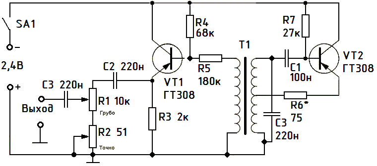
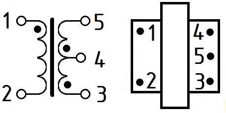

Простой генератор синусоидального сигнала
Генератор сигналов низкой частоты предназначен для налаживания и проверки различных приборов и устройств, изготовляемых радиолюбителями.
Генератор низкой частоты вырабатывает синусоидальный сигнал 750 Гц. Максимальная амплитуда выходного сигнала 2 В. Коэффициент гармоник во всем диапазоне частот не превышает 1,5%. Неравномерность частотной характеристики - не более 3 дБ. С помощью встроенного аттенюатора можно плавно ослабить выходной сигнал.
Напряжение питания генератора 2,4 В от двух аккумуляторов, потребление 6 мА.

Рис. 1 - Принципиальная схема генератор синусоидального сигнала
Трансформатор T1 - любой согласующий от транзисторных радиоприемников.

Рис. 2 - Согласующий трансформатор
Таблица 1
| Тип и толщина набора сердечника, мм |
Первичная обмотка (выводы 1-2) | Вторичная обмотка (выводы 3-4-5) | ||||
| марка и диаметр провода, мм |
число витков | сопротивление постоянному току, Ом |
марка и диаметр провода, мм |
число витков | сопротивление постоянному току, Ом |
|
| Ш8x8 | ПЭЛ-1 0,12 | 1700 | 190±20% | ПЭЛ-1 0,12 | 500+500 | (31+34)±10% |
Для настройки генератора к резистору R6 подключают осциллограф и регулировкой резистора R6 добиваются синусоиды с минимальными искажениями.